OUR RECOMMENDED Alcon PRODUCTS
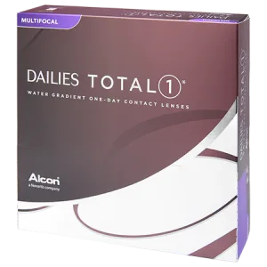
DAILIES TOTAL1® Multifocal
The First and Only Water Gradient Contact Lens for Presbyopes. Technology Featuring the unique Precision Profile Design for clear vision at all distances, near through far, with three ADDs for the different stages of presbyopia Smooth transition from center near to intermediate and distance Consistent ADD power across the entire spherical power range for decreased fit time Design The advanced fe ...
Read More
The First and Only Water Gradient Contact Lens for Presbyopes.
Technology
Featuring the unique Precision Profile Design for clear vision at all distances, near through far, with three ADDs for the different stages of presbyopia
- Smooth transition from center near to intermediate and distance
- Consistent ADD power across the entire spherical power range for decreased fit time
Design
The advanced features of DAILIES TOTAL1® Multifocal contact lenses are designed for the specific needs of presbyopes
Reduced End-of-day Dryness
- Water Gradient technology
- Water content approaches nearly 100% at the outermost surface
- Minimizes friction with the delicate tissues of the eye
Exceptional Comfort
- Water Gradient technology
- Ultra-soft, hydrophilic surface gel designed to provide exceptional lubricity
Seamless Vision at All Distances, Near Through Far
- Precision ProfileTM Design of the Alcon® Multifocal portfolio features smooth progression of power gradients
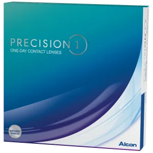
Precision1®
Life in PRECISION1® lenses is easy to love. That’s because these babies are easy to wear. PRECISION1® contact lenses help you embrace the freedom of life with lenses. PRECISION1® contact lenses are tiny pairs of genius with some big, beautiful science woven into their DNA. With SMARTSURFACE® Technology, each lens has a thin layer of moisture on the surface that is made up of ...
Read More
Life in PRECISION1® lenses is easy to love. That’s because these babies are easy to wear. PRECISION1® contact lenses help you embrace the freedom of life with lenses.
PRECISION1® contact lenses are tiny pairs of genius with some big, beautiful science woven into their DNA. With SMARTSURFACE® Technology, each lens has a thin layer of moisture on the surface that is made up of more than 80% water. They are so easy to wear, you’ll love them.
- Precise Vision
- Dependable Comfort
- Easy Handling
OUR Alcon PRODUCTS
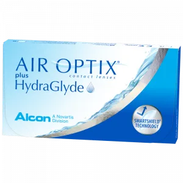
AIR OPTIX® plus HydraGlyde
LASTING LENS SURFACE MOISTURE AND EXCELLENT DEPOSIT PROTECTION IN ONE CONTACT LENS AIR OPTIX® plus HydraGlyde contact lenses bring together two advanced technologies designed to provide long-lasting lens surface moisture and deposit protection PRODUCT FEATURES: Smartshield® Technology: Helps shield against irritating deposits all month long Hydraglyde Moisture Matrix: Attracts and main ...
Read More
LASTING LENS SURFACE MOISTURE AND EXCELLENT DEPOSIT PROTECTION IN ONE CONTACT LENS
AIR OPTIX® plus HydraGlyde contact lenses bring together two advanced technologies designed to provide long-lasting lens surface moisture and deposit protection
PRODUCT FEATURES:
Smartshield® Technology: Helps shield against irritating deposits all month long
Hydraglyde Moisture Matrix: Attracts and maintains surface moisture on the lens even through the end of the day
AIR OPTIX® plus HydraGlyde contact lenses support a comfortable lens wearing experience.
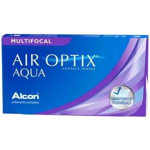
AIR OPTIX® AQUA Multifocal
The Unique Precision Profile™ design of AIR OPTIX® AQUA Multifocal contact lenses allows for a range of prescription strengths to blend across the lens. It works with your eyes' natural function for uninterrupted clear vision, near through far. Clear vision at all distances, near through far. Smooth transition between a wide range of distances. Comfort throughout the wearing period. ...
Read More
The Unique Precision Profile™ design of AIR OPTIX® AQUA Multifocal contact lenses allows for a range of prescription strengths to blend across the lens. It works with your eyes' natural function for uninterrupted clear vision, near through far.
- Clear vision at all distances, near through far.
- Smooth transition between a wide range of distances.
- Comfort throughout the wearing period.
As we approach 40, our eyes lose the ability to focus on near objects the way they used to. This condition, which is called presbyopia, cannot be avoided, but it can be corrected with contact lenses such as AIR OPTIX® AQUA Multifocal contact lenses. The Unique Precision Profile™ design of AIR OPTIX® AQUA Multifocal contact lenses allows for a range of prescription strengths to blend across the lens for clear, uninterrupted vision, near through far, and allows for clear vision for the biggest challenges—like reading fine print—so you can go back to seeing clearly without having to strain or struggle with readers.
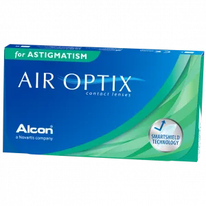
AIR OPTIX® for Astigmatism
Having astigmatism does not mean you have to settle for dryness, discomfort and blurred vision. AIR OPTIX® for Astigmatism contact lenses are specially designed with two unique technologies to give you moisture and consistent comfort. Consistent comfort without compromise. Consistently clear vision. Outstanding visual acuity. Because lenses for astigmatism require two prescriptions that mus ...
Read More
Having astigmatism does not mean you have to settle for dryness, discomfort and blurred vision. AIR OPTIX® for Astigmatism contact lenses are specially designed with two unique technologies to give you moisture and consistent comfort.
- Consistent comfort without compromise.
- Consistently clear vision.
- Outstanding visual acuity.
Because lenses for astigmatism require two prescriptions that must stay in place relative to the eye, stability is key to clear, consistent vision. Some contact lenses for astigmatism rotate, which can cause blurry vision, and the buildup of irritating deposits can make them feel dry and less comfortable over time. AIR OPTIX® for Astigmatism contact lenses are different.
PRECISION BALANCE 8|4™ Lens Design: Designed to keep contact lenses in place and prevent blurriness.
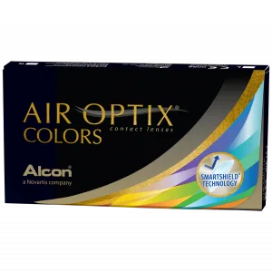
AIR OPTIX® COLORS
AIR OPTIX® COLORS contact lenses create a beautiful look that blends naturally with any eye color—whether you have dark eyes or light, whether you need vision correction or not. These breathable contact lenses provide stunning eye color and outstanding comfort. Plus, their monthly replacement schedule is easy to remember. Beauty, comfort, and breathability—together like never befor ...
Read More
AIR OPTIX® COLORS contact lenses create a beautiful look that blends naturally with any eye color—whether you have dark eyes or light, whether you need vision correction or not. These breathable contact lenses provide stunning eye color and outstanding comfort. Plus, their monthly replacement schedule is easy to remember.
Beauty, comfort, and breathability—together like never before
- BEAUTY - Unique 3-in-1 Color Technology to enhance any eye color for a naturally beautiful look
- COMFORT - Exclusive SmartShield® Technology helps protect the lens from irritating deposits for consistent comfort
- BREATHABILITY - Allows oxygen through for white, healthy-looking eyes
3-IN-1 COLOR TECHNOLOGY
- OUTER RING defines the eyes
- PRIMARY COLOR transforms the eye color
- INNER RING brightens and adds depth
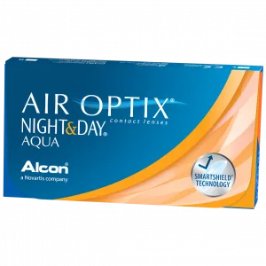
AIR OPTIX® NIGHT & DAY AQUA
AIR OPTIX® NIGHT & DAY® AQUA contact lenses are FDA-approved for daily wear and up to 30 nights of continuous wear. They are the contact lens brand most recommended by eye care professionals for patients who sleep overnight in their contact lenses. Allows the most oxygen through the lens of any available soft contact lenses. Wake up and see comfortably, wherever, whenever. Consistent ...
Read More
AIR OPTIX® NIGHT & DAY® AQUA contact lenses are FDA-approved for daily wear and up to 30 nights of continuous wear. They are the contact lens brand most recommended by eye care professionals for patients who sleep overnight in their contact lenses.
- Allows the most oxygen through the lens of any available soft contact lenses.
- Wake up and see comfortably, wherever, whenever.
- Consistent comfort from day 1 to day 30.
- Top choice for lens sleepers among eye care professionals.
If you are sleeping in your contact lenses, ask your eye care professional about AIR OPTIX® NIGHT & DAY® AQUA contact lenses. They are FDA-approved for up to 30 days and nights of continuous wear and are the most breathable soft contact lenses available.
Preferred Extended-Wear Lens: FDA-approved for daily wear and up to 30 nights of continuous wear, AIR OPTIX® NIGHT & DAY® AQUA contact lenses are the #1 brand recommended by United States eye care professionals for people who sleep in their contact lenses.
Unmatched Breathability: Up to 6X more breathable than traditional soft contact lenses, AIR OPTIX® NIGHT & DAY® AQUA contact lenses allow oxygen to flow through the lens, for white, healthy-looking eyes. It is the most breathable soft contact lens on the market.
Proprietary Surface Technology: The protective SmartShield™ surface of AIR OPTIX® NIGHT & DAY® AQUA contact lenses is designed to resist deposits all day, every day, for up to a month.
Consistent comfort from day 1 to day 30: AIR OPTIX® NIGHT & DAY® AQUA contact lenses give lens wearers everyday comfort. People who sleep in their lenses agreed that AIR OPTIX® NIGHT & DAY® AQUA contact lenses were comfortable and provided clear vision upon awakening.
AIR OPTIX® NIGHT & DAY® AQUA contact lenses are FDA-approved for up to 30 days and nights of continuous wear to let you fall asleep and wake up to comfortable, clear vision.
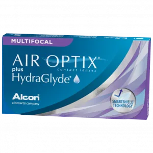
AIR OPTIX® plus HydraGlyde Multifocal
AIR OPTIX® plus HydraGlyde ® Multifocal contact lenses are made with a unique combination of technologies to give you the comfortable lens-wearing experience you deserve†. With HydraGlyde® Moisture Matrix technology, you can enjoy longer-lasting lens surface moisture‡. The Unique Precision Profile® design of AIR OPTIX® plus HydraGlyde® Multifocal contact len ...
Read More
AIR OPTIX® plus HydraGlyde ® Multifocal contact lenses are made with a unique combination of technologies to give you the comfortable lens-wearing experience you deserve†.
With HydraGlyde® Moisture Matrix technology, you can enjoy longer-lasting lens surface moisture‡.
The Unique Precision Profile® design of AIR OPTIX® plus HydraGlyde® Multifocal contact lenses allows for a range of prescription strengths to blend across the lens. It works with your eyes' natural function for uninterrupted clear vision, near through far.
- Clear vision at all distances, near through far.
- Smooth transition between a wide range of distances.
- Comfort throughout the wearing period.
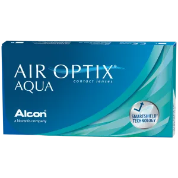
AIR OPTIX® AQUA
Deposits such as debris and lipids can build up on your contact lenses, causing them to feel dry and less comfortable over time. SmartShield® Technology AIR OPTIX® AQUA contact lenses feature SmartShield® Technology, which creates an ultra-thin protective layer to help shield your lenses from irritating deposits and provide consistent comfort all month long. Proprietary Lens Material A ...
Read More
Deposits such as debris and lipids can build up on your contact lenses, causing them to feel dry and less comfortable over time.
SmartShield® Technology
AIR OPTIX® AQUA contact lenses feature SmartShield® Technology, which creates an ultra-thin protective layer to help shield your lenses from irritating deposits and provide consistent comfort all month long.
Proprietary Lens Material
AIR OPTIX® AQUA contact lenses are made of a highly breathable* material that allows nourishing oxygen to flow continuously through the lens for white, healthy-looking eyes.
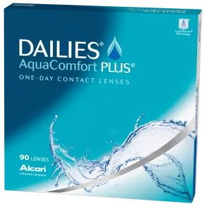
DAILIES® AquaComfort Plus
New lens every day, refreshing all day. Performance DAILIES® brand contact lenses provide a range of lenses to suit a variety of patient vision and lifestyle needs. Featuring unique blink-activated moisture, all DAILIES® brand contact lenses deliver refreshing comfort right up to the end of the day and are ideal for patients seeking outstanding comfort in a contact lens. Technology An idea ...
Read More
New lens every day, refreshing all day.
Performance
DAILIES® brand contact lenses provide a range of lenses to suit a variety of patient vision and lifestyle needs. Featuring unique blink-activated moisture, all DAILIES® brand contact lenses deliver refreshing comfort right up to the end of the day and are ideal for patients seeking outstanding comfort in a contact lens.
Technology
An ideal contact lens for patients who are seeking advanced comfort, especially for those who have tried daily disposable or two-week replacement lenses in the past and experienced discomfort.
Superior comfort upon insertion for your patients.
Only DAILIES® AquaComfort Plus® contact lenses are bathed in a saline solution with added HPMC (Hydroxy-propyl methylcellulose) which optimizes the viscosity to provide a soft, silky feel and superior comfort upon insertion.
HPMC is a high viscosity polymer that provides an initial cushioning effect when inserting the lens, improving wearer comfort. This initial comfort superiority has been proven in clinical studies comparing DAILIES® AquaComfort Plus ® contact lenses to the latest technology in daily disposable contact lenses, both on first-time wearers and current daily disposable contact lens wearers.
Blink-Activated Moisture for All-Day Comfort
Outstanding Tear Film Stability Is a Key Benefit for Your Customers.
Moisture Release for Exceptional Compliance.
A Unique, Single-Use Polymer.
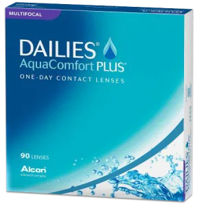
DAILIES® AquaComfort Plus Multifocal
Designed for clarity at all distances, near through far DAILIES ® AquaComfort Plus® Multifocal Contact Lenses feature the same optical design as the #1 selling AIR OPTIX® AQUA Multifocal contact lenses1 and the same material as the #1 selling daily disposable contact lens. Technology DAILIES® AquaComfort Plus® Multifocal Contact Lenses feature the same optical design as #1 sell ...
Read More
Designed for clarity at all distances, near through far
DAILIES ® AquaComfort Plus® Multifocal Contact Lenses feature the same optical design as the #1 selling AIR OPTIX® AQUA Multifocal contact lenses1 and the same material as the #1 selling daily disposable contact lens.
Technology
DAILIES® AquaComfort Plus® Multifocal Contact Lenses feature the same optical design as #1 selling AIR OPTIX® AQUA Multifocal contact lenses1 and the same material as the #1 selling daily disposable contact lens1
Designed to provide clarity and comfort all day.
A daily disposable multifocal contact lens that features blink-activated moisture technology
Designed to improve near vision without compromising distance.
DAILIES® AquaComfort Plus® Multifocal Contact Lenses address the varying needs of your presbyopic patients with an adaptive minus power profile. Minus power at the periphery of the optic zone allows you to “push-plus” at distance.
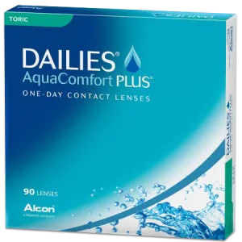
DAILIES® AquaComfort Plus Toric
Moisture and Stability with Every Blink. Features Blink-Activated Moisture Technology for exceptional wettability and superior tear film stability in a world full of digital screens. It’s Precision Curve ® Lens Design supports excellent visual acuity so your astigmatic patients can see comfortably and clearly every day. Technology DAILIES® AquaComfort Plus® Toric Contact Lenses f ...
Read More
Moisture and Stability with Every Blink.
Features Blink-Activated Moisture Technology for exceptional wettability and superior tear film stability in a world full of digital screens. It’s Precision Curve ® Lens Design supports excellent visual acuity so your astigmatic patients can see comfortably and clearly every day.
Technology
DAILIES® AquaComfort Plus® Toric Contact Lenses feature the Precision Curve ® Lens Design for outstanding stability and consistent clear vision—plus blink-activated moisture
Designed for Stability.
- Dual thin zones utilize blinking pressure of upper and lower eyelids to maintain rotational stability. The lens profile is thinner at the top and bottom in this double slab-off design
- Toric back surface matches toricity of cornea to maximize stability.
- Stable on-eye performance with ≤5° oscillation with blink.
- Scribe marks at 3 and 9 o’clock make it easy to measure rotation for accurate fitting.
Designed for Patient Comfort.
- Ultra-thin edge for outstanding comfort as a result of LightStream® Lens Technology
- OK inversion indicator helps make this lens easy for wearers to insert.
Designed to Provide Clarity and Comfort All Day
A daily disposable toric contact lens that features blink-activated moisture technology.
- Moisture released on both sides of the lens with every blink
- Gradual release of moisture per blink10 – about 14,000 times per day
Outstanding Tear Film Stability Is Key For Successful Contact Lens Wear
DAILIES® AquaComfort Plus® Toric Contact Lenses work with the eye’s natural blinking action to release PVA from the lens, helping to maintain a stable tear film throughout the day.
As you know, a stable tear film is essential for good visual acuity and helps provide comfort and a successful lens wearing experience.
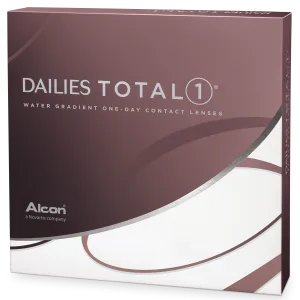
DAILIES TOTAL1® Water Gradient
Water gradient technology provides exceptional comfort that lasts until the end of the day. A Contact Lens that feels like nothing on the eye. A CUSHION OF MOISTURE: Almost 100% water at the very outer surface of the contact lens for exceptional comfort. HIGHEST BREATHABILITY: As compared to all daily disposable contact lenses, for white healthy-looking eyes. A SMOOTH GLIDING SURFACE ALL DAY:&nbs ...
Read More
Water gradient technology provides exceptional comfort that lasts until the end of the day.
A Contact Lens that feels like nothing on the eye.
- A CUSHION OF MOISTURE: Almost 100% water at the very outer surface of the contact lens for exceptional comfort.
- HIGHEST BREATHABILITY: As compared to all daily disposable contact lenses, for white healthy-looking eyes.
- A SMOOTH GLIDING SURFACE ALL DAY: Even after 16 hours of wear, DAILIES TOTAL1® contact lenses maintain a smooth, silky lubricious surface.
RECOMMENDED FOR YOU IF:
- You want exceptional comfort that lasts until the end of the day.
- You want highly breathable daily disposable contact lenses for white, healthy-looking eyes.
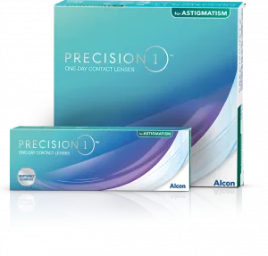
PRECISION1® for Astigmatism
Wearing PRECISION1® for Astigmatism means you’ll always say, “Yasss!” to the things you love, even if you have astigmatism. Only contact lenses uniquely designed to correct astigmatism can provide the clear vision you need to keep it moving. And did we mention PRECISION1® for Astigmatism lenses also feature a cool bit of genius known as SMARTSURFACE® Te ...
Read More
Wearing PRECISION1® for Astigmatism means you’ll always say, “Yasss!” to the things you love, even if you have astigmatism. Only contact lenses uniquely designed to correct astigmatism can provide the clear vision you need to keep it moving. And did we mention PRECISION1® for Astigmatism lenses also feature a cool bit of genius known as SMARTSURFACE® Technology, which keeps moisture on the lens surface. Now you can get out there and See What Happens!